Nicktoons
& The Dice of Destiny
UI design and interface illustration across menus, character selection, inventory, map, progression systems and gameplay indicators.
UI Design
Illustration
An interface built as part of the game world, not on top of it.
For Nicktoons & The Dice of Destiny, I worked on the development of the game’s UI, helping define and solve visual and functional challenges across a wide range of interfaces.
The project required much more than designing individual screens. Each system needed to feel consistent with the game’s illustrated fantasy world while remaining clear, readable and intuitive during gameplay.
My work covered everything from core navigation and system menus to character progression, inventory, map navigation, abilities and smaller UI elements used throughout the game.
A large portion of the interface was also illustrated manually, allowing the UI to feel like a natural extension of the game’s visual identity rather than a separate layer placed on top of it.
Parchment, ornaments and one shared system.
Menus, panels, buttons, icons and information screens were designed around a combination of parchment textures, hand-drawn ornaments, illustrated elements and a color system that helped organize information and interactions.
One of the main challenges was creating a consistent visual language that could work across very different types of interfaces.
The interface also needed to support multiple Nickelodeon characters and environments while maintaining the same overall visual language throughout the game. This approach allowed the UI to feel cohesive across screens with very different purposes.
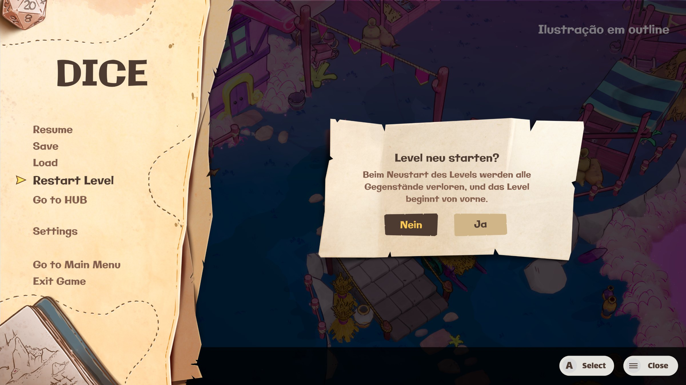
main menu
Custom shapes instead of generic components.
main menu & settings — in motion
These screens required a balance between the game’s illustrated aesthetic and the practical needs of a game menu: clear hierarchy, readable information and intuitive navigation using controller inputs.
I worked on several of the game’s core system interfaces, including the main menu, settings screens and save/load interfaces.
Rather than relying on generic UI components, the interfaces were built around custom shapes, textures, decorative elements and illustrated details that reinforced the game’s fantasy-book visual language.
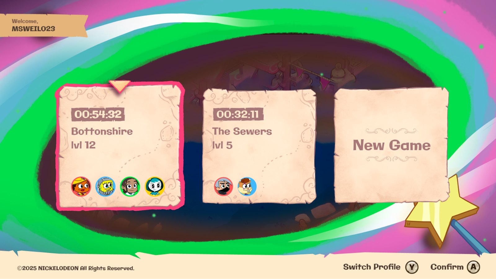
load game
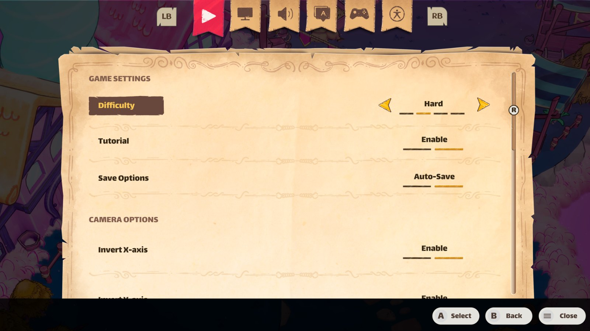
settings
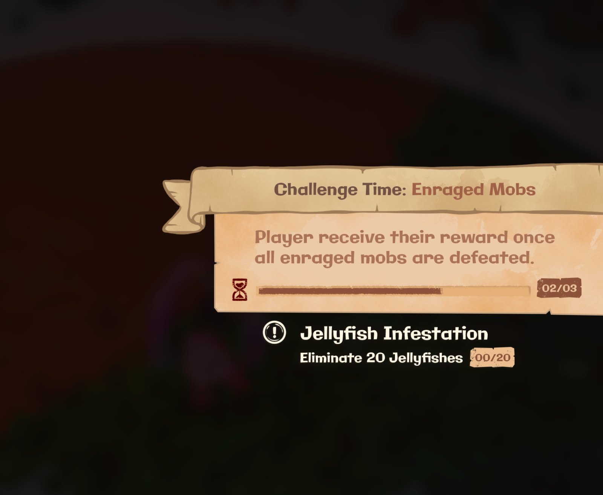
in-game pop-up
loading screen — in motion
Four players, one glance.
character selection — in motion
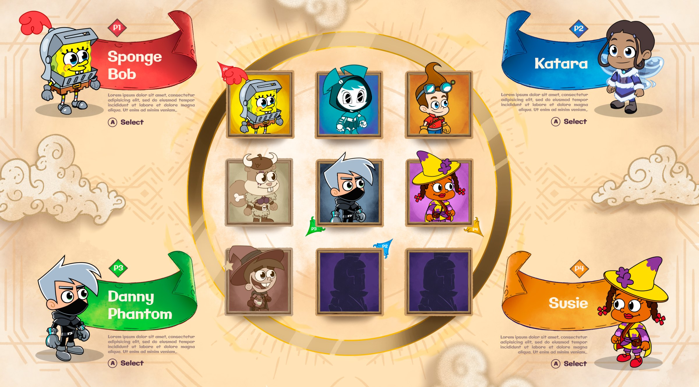
full character selection screen
The interface combines character portraits, large character illustrations, player indicators and color-coded information to make multiplayer selection easy to understand at a glance.
The character selection screen was designed to support a roster of characters from the Nickelodeon universe while maintaining the same visual language established throughout the game.
The surrounding parchment-based layout and illustrated details help connect the interface to the game’s broader fantasy aesthetic.
A lot of information, one readable screen.
inventory — in motion
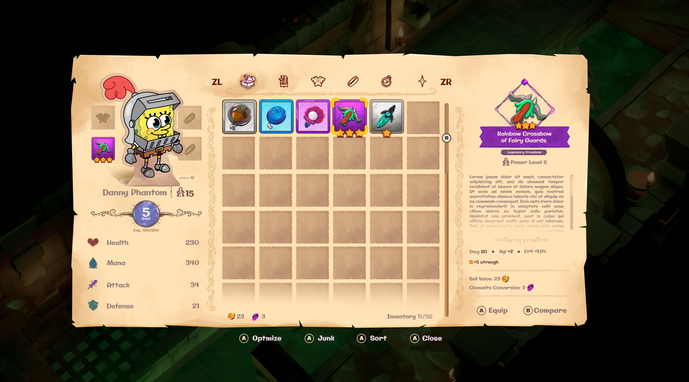
full inventory screen
The inventory combines a large item grid with character information and detailed item descriptions, requiring careful organization of a considerable amount of information within a single screen.
I also worked on the inventory and character progression interfaces, creating systems for displaying equipment, attributes, item information and player progression.
The interface was designed to maintain readability while still preserving the illustrated and handcrafted character of the game.
Levels, costs and locks, read at a glance.
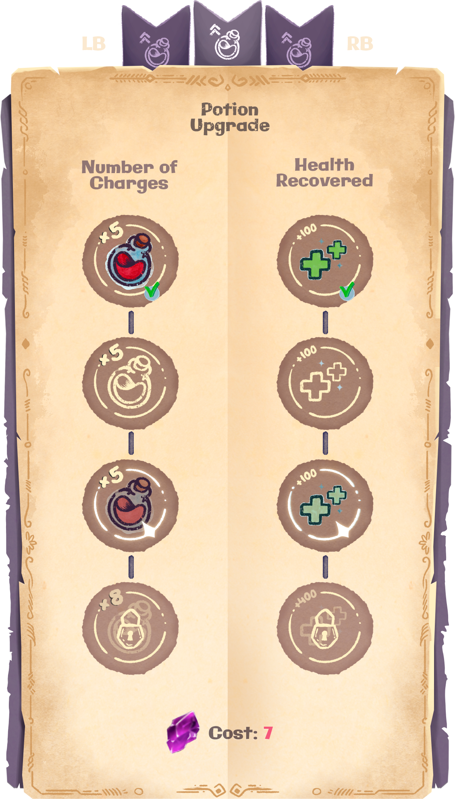
potion upgrade panel — final artwork
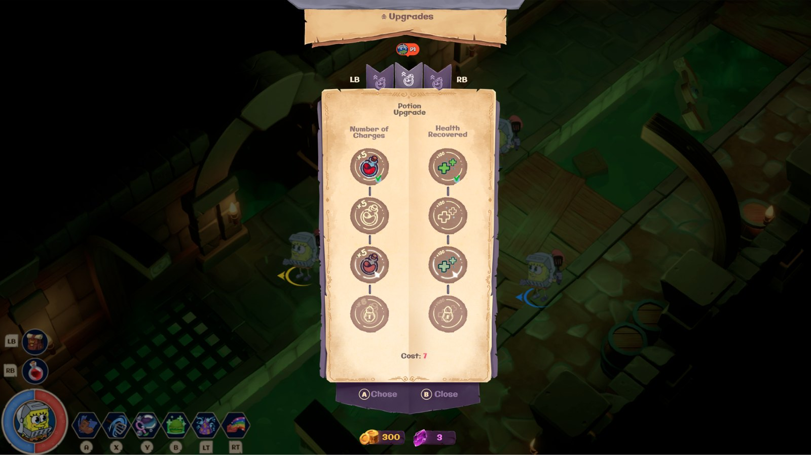
final version
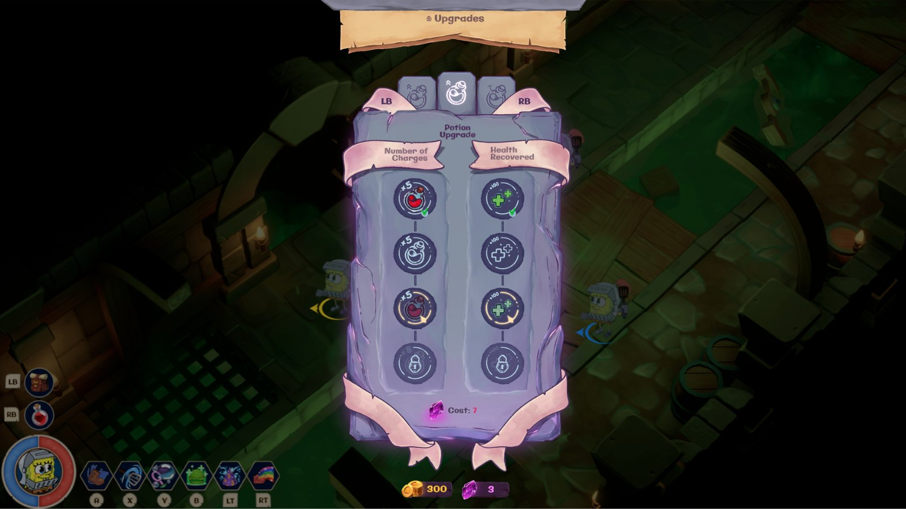
earlier version
potion upgrade & shop — in motion
The screen needed to communicate different upgrade paths, available levels, costs and the current state of each upgrade in a way that was immediately understandable to the player.
One of the more specific interfaces I worked on was the potion upgrade system.
I developed the visual elements and illustrations used to differentiate the upgrade levels, locked states and available upgrades while maintaining the game’s parchment and illustrated visual language.
Navigation drawn into the world.
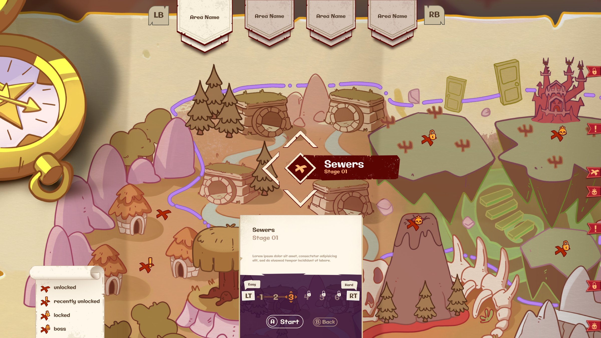
full map — area selection, stage markers and states
I worked on UI elements used to identify areas, stages, objectives and their different states, creating icons and markers that could communicate information without competing with the artwork underneath.
The game’s map required another layer of information hierarchy, combining the illustrated world with navigation, progression and level information.
The result was an interface that integrates directly with the illustrated map rather than treating navigation as a separate UI layer.
Every message on its own piece of paper.
dialogue boxes — in motion
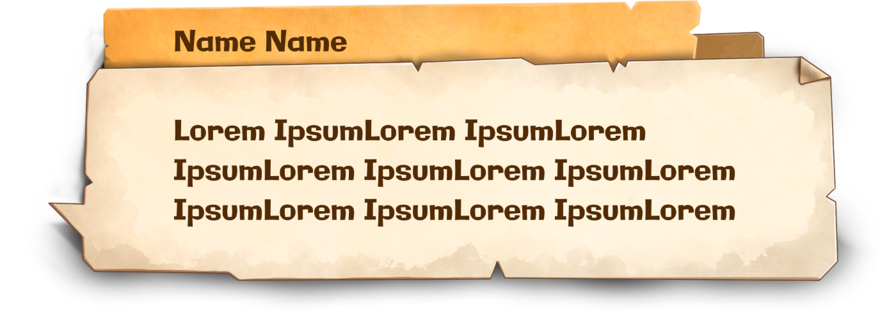
npc dialogue box
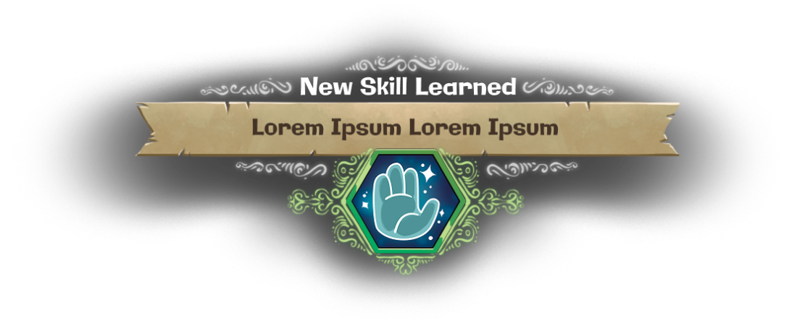
new skill learned
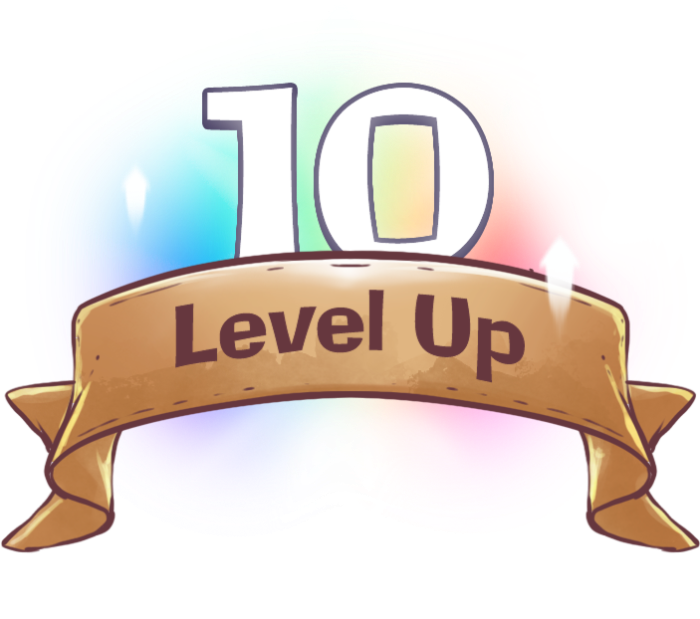
level up
level up & labels — in motion
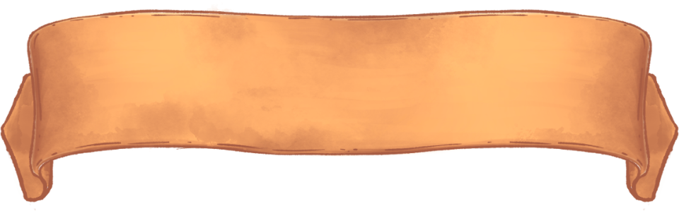
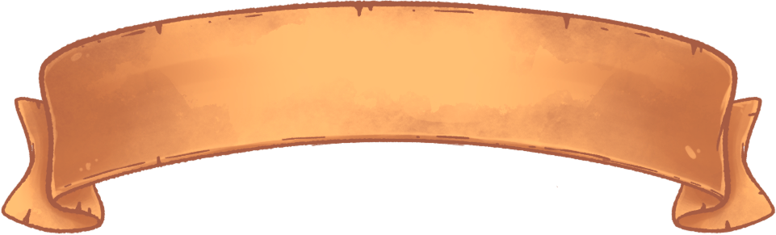
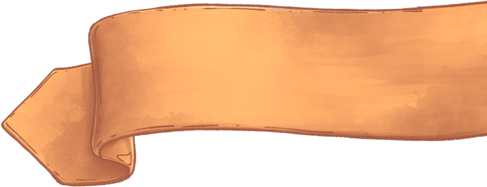
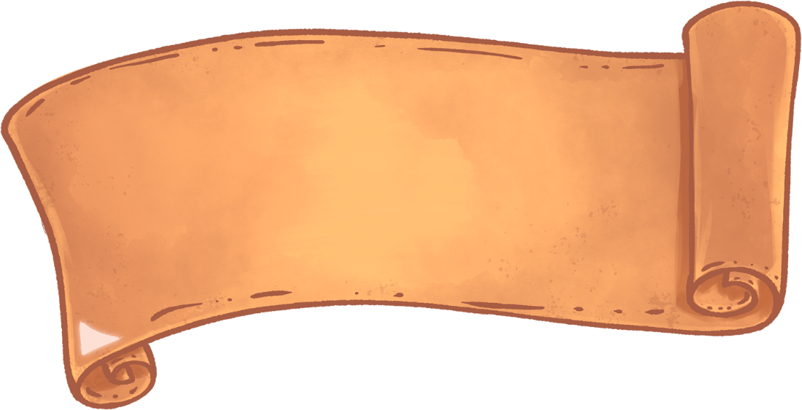
ribbons, banners and scroll labels
Dialogue boxes, notification panels and level-up screens were drawn as torn paper and parchment, each one shaped around the amount of information it had to carry.
The same construction rules — torn edges, ornaments, ribbon headers and a limited color system — keep very different message types recognisable as one family.
Drawn by hand, down to the smallest state.
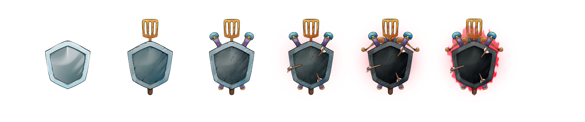
difficulty icon progression
level & difficulty selection — in motion
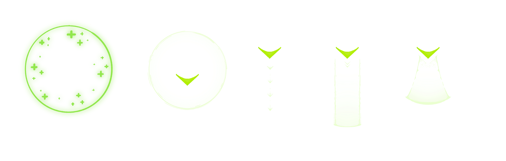
skill area-of-effect indicator
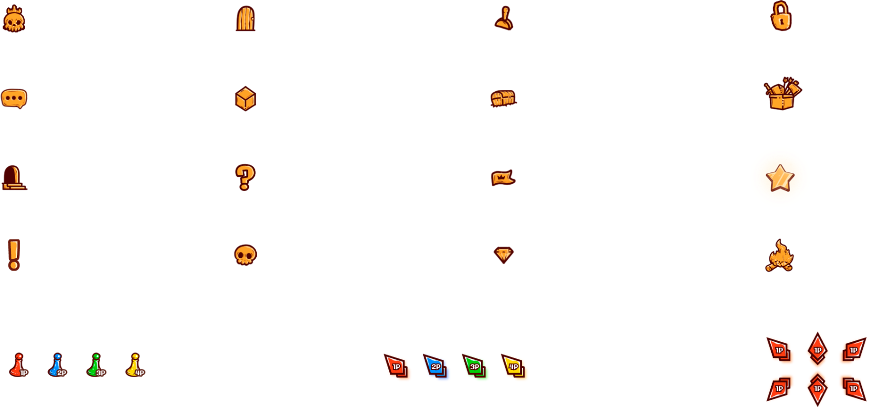
map, gameplay and player icons
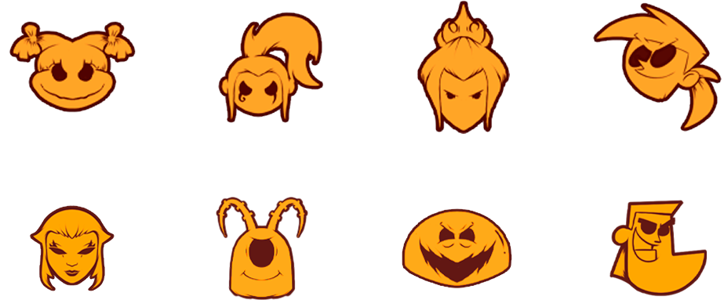
boss icons
Many of these elements were illustrated manually, allowing them to maintain the same hand-drawn quality and visual language as the rest of the interface.
Beyond the larger interfaces, I also created a variety of smaller UI elements used throughout the game. This included map icons, difficulty indicators, gameplay symbols, ability indicators and other visual components required by different systems.
The skill area-of-effect indicator was another example where the UI needed to communicate gameplay information clearly while still fitting naturally into the game’s visual world.
From the larger screens to the smallest icons, the same illustrated language.
Working across so many different systems also meant solving very different interface problems while maintaining consistency — from menus and inventory management to character selection, progression systems and real-time gameplay indicators.